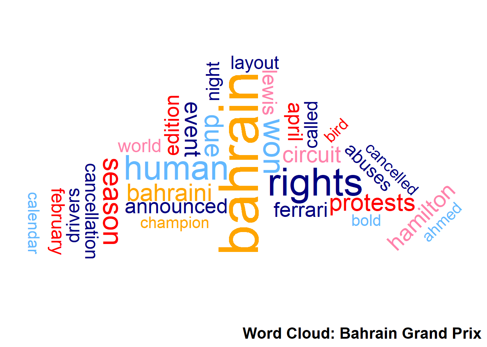

Word Cloud for F1 Grands Prix
Explore five word clouds representing different Grands Prix across the globe and learn insights into some of the iconic races in F1!
Wrangling
The word clouds were created using text from Wikipedia pages for each race. With the help of the tidytext and stringr packages, irrelevant words, digits, and stop words were removed. The larger a word appears, the more frequently it was mentioned.
Interpretation
These word clouds are not simply pretty visuals—they reveal to us key information about the races. Observe the word clouds and learn some interesting facts about each of the races below.
70th Anniversary Grand Prix
In this word cloud, ‘hamilton’, ‘bottas’, ‘mercedes’, ‘verstappen’, ‘tyre’ and ‘compound’ are some words that catch the eye and tell the story of the 70th Anniversary Grand Prix. Hamilton, Bottas and Verstappen are prominent F1 drivers who featured in battles in this Grand Prix. Interestingly, the two Mercedes drivers, Hamilton and Bottas, faced tyre overheating and blistering, which allowed Max Verstappen to capitalize on a superior strategy and win on harder compounds.
United States Grand Prix West (1979)
In the word cloud for the 1979 United States Grand Prix West, terms like ‘beach’, ‘hairpin’, ‘villeneuve’, and ‘lauda’ stand out. The event took place on the streets of Long Beach, California, directly referenced by the term ‘beach’. The circuit featured the challenging Queen’s Hairpin, which also featured in the word cloud. The word ‘villeneuve’ and ‘ferrari’ point to Ferrari driver Gilles Villeneuve, who became an important figure in this Grand Prix by securing pole position, recording the fastest lap, and winning the race. The mention of ‘lauda’ refers to Niki Lauda, a two-time World Champion by that year.
Caesars Palace Grand Prix
In this word cloud, terms like ‘las vegas’, ‘palace’, ‘parking’, and ‘heat’ define the unique setting of the Caesars Palace Grand Prix. The race was held in the parking lot of the Caesars Palace Hotel in Las Vegas, a distinctive and unconventional venue for Formula 1. The heat and flat circuit layout presented challenges for drivers, making it one of the more unusual races in F1 history. Despite its unique appeal, it remains a curiosity in the sport’s timeline.
Argentine Grand Prix
In this word cloud, words like ‘argentine’, ‘victory’, ‘reutemann’, and ‘buenos aires’ tell the story of the Argentine Grand Prix. The race was held in Buenos Aires, as highlighted by the location name. Carlos Reutemann, the Argentinian driver, stands out as a key figure, securing a notable victory on home soil, bringing immense pride to the local fans. The layout of the circuit, known for its challenging ‘corners’ and configurations, is another defining feature of this event.
Bahrain Grand Prix

The words ‘bahrain’, ‘human rights’, ‘protests’, and ‘cancelled’ paint a vivid picture of the controversy surrounding this event. The Grand Prix, held at the Bahrain International Circuit, faced criticism and disruptions due to protests about human rights violations in the region. Many races were also cancelled due to the protests. This Grand Prix is remembered for its political and social backdrop as much as its racing.
As seen above, word clouds reveal a great deal of significant information about the races in these Grands Prix, including the name of key drivers (such as ‘Hamilton’, ‘Lauda’ and ‘Verstappen’), the type of car they competed with (‘Ferrari’, ‘Mercedes’, etc.), the name and nature of the location (‘beach’, ‘heat’, etc.) and controversies and incidents during the Grands Prix (‘protests’, ‘crash’, etc.).
Word clouds are a fun and engaging way to introduce newcomers to the world of Formula 1!
References
CODER, R. (2024), R CHARTS: Interactive maps with leaflet in r.
Patrik_P (2017), “Creating a leaflet map with custom labels in r,” Stack Overflow, Forum post, Available at https://stackoverflow.com/questions/45538831/creating-a-leaflet-map-with-custom-labels-in-r.